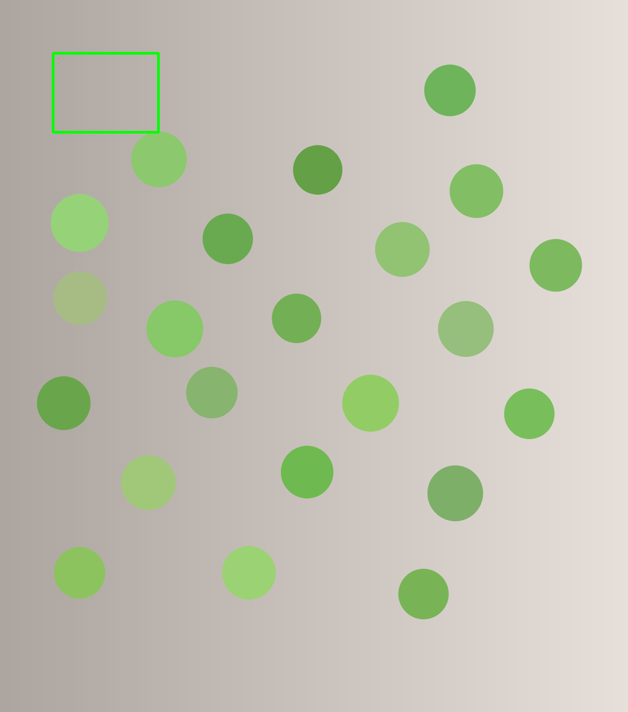
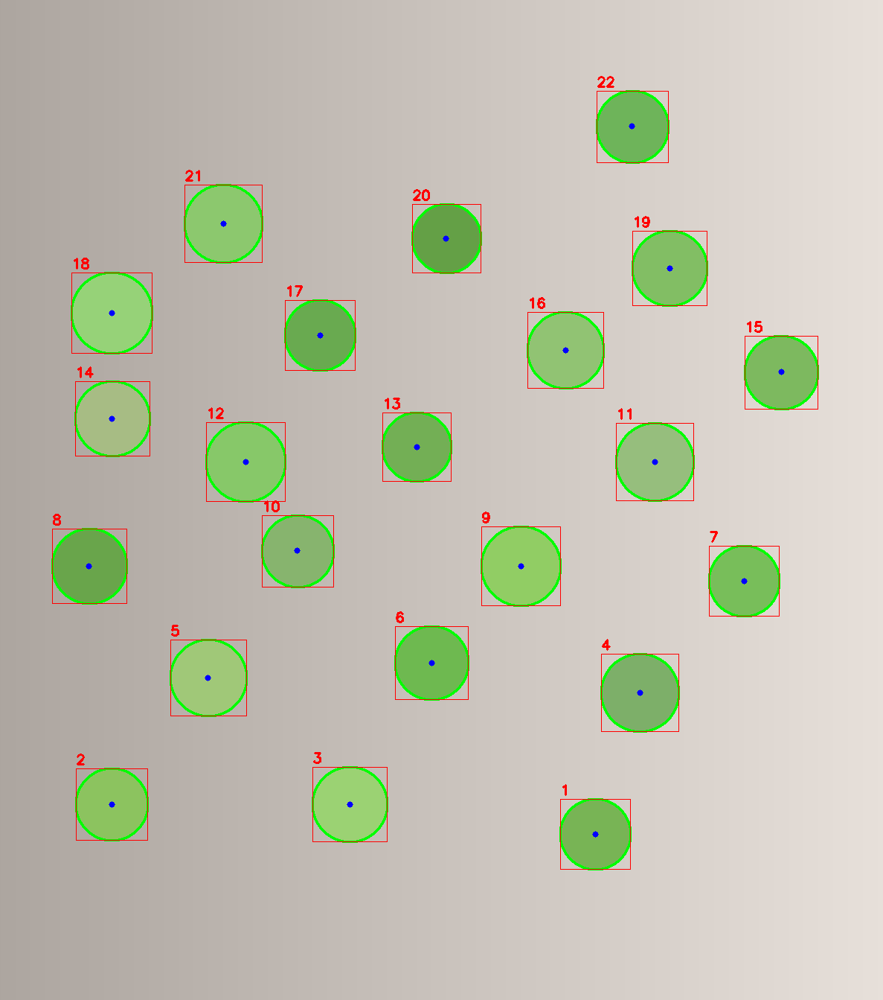
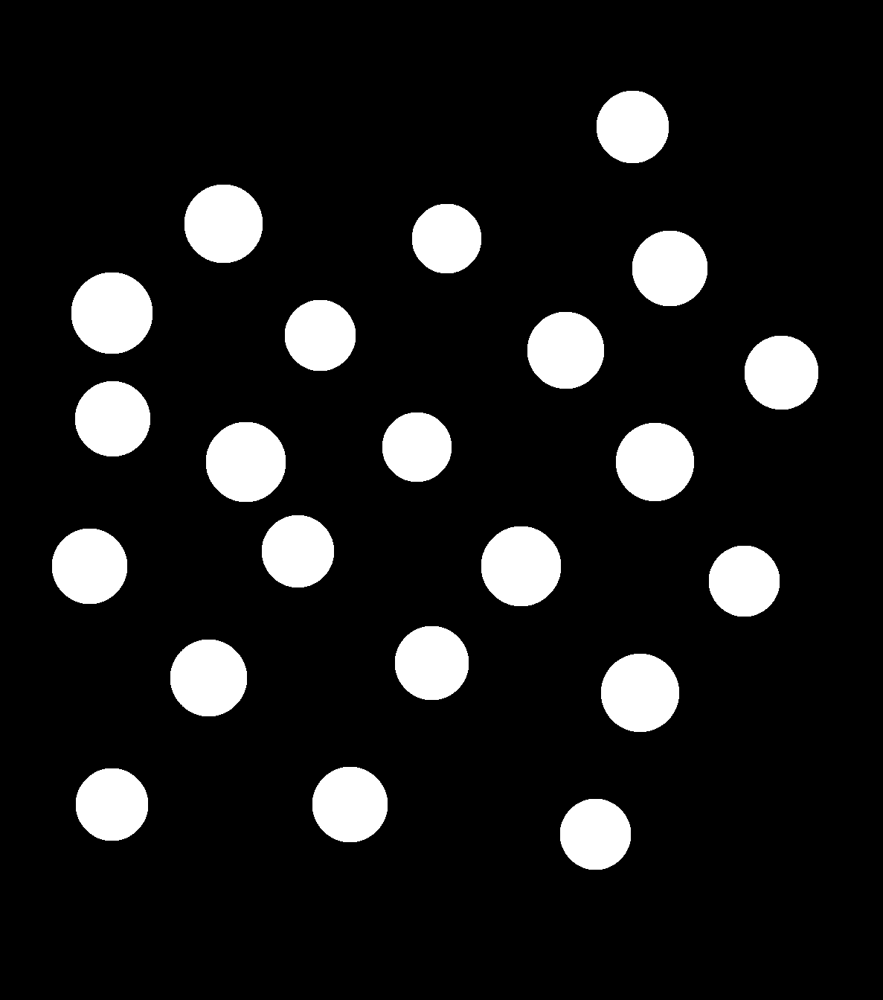
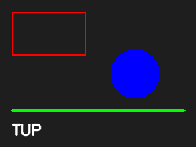

图像与 Mat
这一部分从 OpenCV 的基本容器 Mat 开始：内存怎样组织，
像素怎样读写，ROI 与克隆有什么区别，BGR、灰度与 HSV 怎样转换，
最后用掩码与绘制把检测结果标在图上。这一部分是后续所有图像处理的基础。
读本部分之前，需要先读 0.2（编译与链接）、 0.3（VS Code 与 IntelliSense）、 0.4（读图、显示与保存）与 0.5（数绿球的完整例子）。 本部分假设读者已经能在练习目录中编译并运行例子。
下面的命令在课程文件夹 lessons/opencv（本页所在目录）下执行。
/tmp 是系统存放临时文件的目录，电脑重启后可能被清空。
如果没有按第 0 部分 0.1 准备过练习目录，或者准备之后重启过电脑，
先执行下面几行，再开始这一部分：
rm -rf /tmp/opencv-course
mkdir -p /tmp/opencv-course
cp -r 示例代码 素材 /tmp/opencv-course/
cd /tmp/opencv-course/示例代码
第一行会删除整个练习副本，路径不要改成自己的目录。复制完成后，
用 pwd 确认当前目录是 /tmp/opencv-course/示例代码。
1.1Mat 的内存模型
cv::Mat 由两部分组成：一个描述图像的头部，以及一块存放像素的数据。
头部记录行数、列数、类型、步长与数据指针；数据块按行连续存放像素。
理解这两部分的分工，才能判断一次赋值或一次 ROI 操作是否复制了像素。
头部与数据
常用的头部字段如下：
| 字段 | 含义 |
|---|---|
rows | 行数，也就是图像高度 |
cols | 列数，也就是图像宽度 |
channels() | 每个像素的通道数，灰度图是 1，彩色图通常是 3 |
depth() | 每个通道的元素类型，例如 8 位无符号整数对应 0 |
type() | 深度与通道数编码后的类型编号，例如 CV_8UC3 是 16 |
step | 一行占用的字节数，包含行尾可能的填充 |
elemSize() | 一个像素占用的字节数，等于通道数乘以每通道字节数 |
data | 指向数据块起始位置的指针 |
isContinuous() | 数据是否按行连续存放，中间没有额外填充 |
头部很小，复制头部的代价很低；数据块可能很大，复制数据块的代价高。
Mat 的赋值运算符只复制头部并共享数据；要复制像素，必须调用
clone() 或 copyTo()。下面两小节分别观察这两种行为。
创建与观察
下面的程序创建一个 2 行 3 列的单通道图像，打印头部字段，
再分别观察浅拷贝、克隆与 copyTo 的行为。
#include <iostream>
#include <opencv2/core.hpp>
int main() {
cv::Mat image(2, 3, CV_8UC1, cv::Scalar(10));
std::cout << "rows=" << image.rows << " cols=" << image.cols
<< " channels=" << image.channels()
<< " depth=" << image.depth()
<< " type=" << image.type() << '\n';
std::cout << "step=" << image.step << " elemSize=" << image.elemSize()
<< " continuous=" << (image.isContinuous() ? "yes" : "no")
<< '\n';
cv::Mat alias = image;
std::cout << "alias shares data: "
<< (alias.data == image.data ? "yes" : "no") << '\n';
alias.at<uchar>(0, 0) = 99;
std::cout << "image(0,0) after alias: "
<< static_cast<int>(image.at<uchar>(0, 0)) << '\n';
cv::Mat clone = image.clone();
std::cout << "clone shares data: "
<< (clone.data == image.data ? "yes" : "no") << '\n';
clone.at<uchar>(0, 0) = 42;
std::cout << "image(0,0) after clone: "
<< static_cast<int>(image.at<uchar>(0, 0)) << '\n';
std::cout << "clone(0,0): " << static_cast<int>(clone.at<uchar>(0, 0))
<< '\n';
cv::Mat copied;
image.copyTo(copied);
std::cout << "copyTo shares data: "
<< (copied.data == image.data ? "yes" : "no") << '\n';
return 0;
}编译并运行：
g++ -std=c++17 -Wall -Wextra 1.1-mat_memory.cpp -o mat_memory \
$(pkg-config --cflags --libs opencv4)
./mat_memoryrows=2 cols=3 channels=1 depth=0 type=0 step=3 elemSize=1 continuous=yes alias shares data: yes image(0,0) after alias: 99 clone shares data: no image(0,0) after clone: 99 clone(0,0): 42 copyTo shares data: no
前两行是头部字段。2 行 3 列、单通道、深度 0 对应 CV_8UC1，
类型编号是 0。每个像素 1 字节，一行 3 个像素，所以 step=3、
elemSize=1，数据连续存放。
浅拷贝
cv::Mat alias = image; 只复制头部。两个头部指向同一块数据，
因此 alias.data == image.data 为真。程序把
alias 的第 0 行第 0 列改成 99，再从 image
读同一个位置，得到的也是 99。
cv::Mat alias = image; 看起来是一次普通的复制，实际没有复制像素。
共享并不来自引用类型：alias 是一个独立的
Mat 对象，有自己的一份头部；头部里的数据指针与 image
指向同一块像素，图像数据的引用计数因此加一。共享来自 Mat 自身的
拷贝语义，不是 cv::Mat& 那样的别名。只要还有一个头部指向数据，
数据就不会释放。在函数之间按值传递 Mat 时，传递的也是这个共享视图。
两种写法的区别在于能否改动对方的头部。通过 alias 修改像素，
image 读到的像素随之改变；但把整个 alias 重新赋值，
只会让 alias 指向新的数据，image 的头部不受影响。
若写成 cv::Mat& ref = image;，ref 才是
image 的别名，对 ref 重新赋值会改到
image 本身。
深拷贝
image.clone() 新建一个头部并复制全部像素，返回的
Mat 与原图不共享数据。程序把克隆图的第 0 行第 0 列改成 42，
原图仍然是 99，克隆图是 42。
image.copyTo(copied) 也是深拷贝，但它会先按源图的尺寸与类型
重新分配目标；如果目标已经存在且尺寸、类型相同，则直接写入已有的数据块。
两种写法都得到独立数据，选择哪一种取决于代码风格与目标是否已经存在。
函数返回局部 Mat 的感兴趣区域（region of interest，ROI）视图时，返回的头部仍指向原图的数据。
ROI 视图与原图共享同一块图像数据，并持有相应的引用计数；即使原图的
Mat 头部销毁，数据也会保留到最后一个共享它的 Mat
销毁，因此返回 ROI 视图本身是安全的。若返回值需要与原图独立，返回
clone() 的结果。
步长与连续内存
step 是一行占用的字节数。对刚创建的 2×3 单通道图，
一行 3 字节，所以 step=3。对三通道图，一行是
cols * 3 字节。某些操作（例如 ROI、带填充的采集缓冲区）
会让一行末尾多出几个字节，这时 step 大于
cols * elemSize()，数据不再连续，isContinuous()
返回假。
按行访问时，可以用 ptr<T>(y) 取得第 y 行的首地址，
再按元素下标读写；按像素访问时，用 at<T>(y, x)。
两者的第一个下标都是行号。不要假设 data 一定连续：
需要把数据当作一维数组处理时，先检查 isContinuous()，
或者先 clone() 得到连续副本。
也可以用外部缓冲区构造 Mat：
cv::Mat wrapped(rows, cols, CV_8UC3, buffer.data(), step)。
这种构造不复制数据，Mat 只借用缓冲区；缓冲区必须比
Mat 活得更久，或在跨线程使用前 clone()。
题目：创建一个 2×3 的三通道 Mat，填充 (10, 20, 30)。用赋值得到 alias，用 clone() 得到 clone，用 copyTo() 得到 copied；分别改这三个副本的第 0 行第 0 列，再打印原图与两个深拷贝的像素。
完整程序：
#include <iostream>
#include <opencv2/core.hpp>
int main() {
cv::Mat image(2, 3, CV_8UC3, cv::Scalar(10, 20, 30));
cv::Mat alias = image;
alias.at<cv::Vec3b>(0, 0)[0] = 9;
cv::Mat clone = image.clone();
clone.at<cv::Vec3b>(0, 0)[0] = 99;
cv::Mat copied;
image.copyTo(copied);
copied.at<cv::Vec3b>(0, 0)[0] = 77;
std::cout << "image type=" << image.type()
<< " channels=" << image.channels() << '\n';
std::cout << "image shares alias: "
<< (image.data == alias.data ? "yes" : "no") << '\n';
std::cout << "image shares clone: "
<< (image.data == clone.data ? "yes" : "no") << '\n';
std::cout << "image shares copied: "
<< (image.data == copied.data ? "yes" : "no") << '\n';
const cv::Vec3b original = image.at<cv::Vec3b>(0, 0);
std::cout << "image(0,0): [" << static_cast<int>(original[0]) << ", "
<< static_cast<int>(original[1]) << ", "
<< static_cast<int>(original[2]) << "]\n";
const cv::Vec3b cloned = clone.at<cv::Vec3b>(0, 0);
std::cout << "clone(0,0): [" << static_cast<int>(cloned[0]) << ", "
<< static_cast<int>(cloned[1]) << ", "
<< static_cast<int>(cloned[2]) << "]\n";
const cv::Vec3b copy = copied.at<cv::Vec3b>(0, 0);
std::cout << "copied(0,0): [" << static_cast<int>(copy[0]) << ", "
<< static_cast<int>(copy[1]) << ", "
<< static_cast<int>(copy[2]) << "]\n";
return 0;
}编译并运行：
g++ -std=c++17 -Wall -Wextra 1.1-eg-copy_semantics.cpp -o copy_semantics \
$(pkg-config --cflags --libs opencv4)
./copy_semanticsimage type=16 channels=3 image shares alias: yes image shares clone: no image shares copied: no image(0,0): [9, 20, 30] clone(0,0): [99, 20, 30] copied(0,0): [77, 20, 30]
alias 与原图共享数据，改它就是改原图；clone() 与 copyTo() 都得到独立数据，改它们不影响原图。alias、clone 与 copied 的第 0 行第 0 列分别是 9、99、77，原图读到 9。
创建一个 3×4 的三通道 Mat，填充 (5, 6, 7)。用赋值得到 alias，用 clone() 得到 copy；把 alias 的 (1,2) 像素绿色分量改成 200，把 copy 的 (2,3) 像素红色分量改成 150。分别打印原图这两个像素，并打印两个副本是否与原图共享数据。
本题不需要标准输入，数据直接写在 main 里。
image(1,2): [5, 200, 7] image(2,3): [5, 6, 7] alias shares: yes copy shares: no
看答案
alias 修改的是原图；copy 是独立数据，改它不影响原图。
#include <iostream>
#include <opencv2/core.hpp>
int main() {
cv::Mat image(3, 4, CV_8UC3, cv::Scalar(5, 6, 7));
cv::Mat alias = image;
cv::Mat copy = image.clone();
alias.at<cv::Vec3b>(1, 2)[1] = 200;
copy.at<cv::Vec3b>(2, 3)[2] = 150;
const cv::Vec3b a = image.at<cv::Vec3b>(1, 2);
std::cout << "image(1,2): [" << static_cast<int>(a[0]) << ", "
<< static_cast<int>(a[1]) << ", "
<< static_cast<int>(a[2]) << "]\n";
const cv::Vec3b c = image.at<cv::Vec3b>(2, 3);
std::cout << "image(2,3): [" << static_cast<int>(c[0]) << ", "
<< static_cast<int>(c[1]) << ", "
<< static_cast<int>(c[2]) << "]\n";
std::cout << "alias shares: "
<< (alias.data == image.data ? "yes" : "no") << '\n';
std::cout << "copy shares: "
<< (copy.data == image.data ? "yes" : "no") << '\n';
return 0;
}image(1,2): [5, 200, 7] image(2,3): [5, 6, 7] alias shares: yes copy shares: no
你现在能写什么：创建一个 Mat 并打印它的行数、列数、
通道、类型与步长；判断一次赋值是否共享像素；在需要独立数据时写出
clone() 或 copyTo()，并说出两者的区别。
1.2读、写、显示与错误处理
这一课把读取、显示与保存的细节补齐：三个读取标志分别得到什么， 读取失败怎样检查，窗口与保存的返回值怎样处理，路径相对于哪个目录。
三个读取标志
| 标志 | 结果 | 典型用途 |
|---|---|---|
cv::IMREAD_COLOR |
三通道 BGR；原图带透明通道时将其丢弃 | 彩色检测、显示、保存彩色副本 |
cv::IMREAD_GRAYSCALE |
单通道灰度图 | 阈值、边缘、角点检测 |
cv::IMREAD_UNCHANGED |
按文件实际内容读取，可能保留透明通道或 16 位深度 | 需要原样读取像素时 |
同一个文件用不同标志读取，得到的通道数与类型编号不同。下面的程序 分别用三个标志读同一张 PNG，打印尺寸与类型，再试读一个不存在的路径。
读取与检查
#include <iostream>
#include <string>
#include <opencv2/core.hpp>
#include <opencv2/imgcodecs.hpp>
#include <opencv2/highgui.hpp>
int main() {
const std::string path = "../素材/synth_balls.png";
cv::Mat color = cv::imread(path, cv::IMREAD_COLOR);
cv::Mat gray = cv::imread(path, cv::IMREAD_GRAYSCALE);
cv::Mat unchanged = cv::imread(path, cv::IMREAD_UNCHANGED);
if (color.empty() || gray.empty() || unchanged.empty()) {
std::cout << "无法读取：" << path << std::endl;
return 1;
}
std::cout << "color: rows=" << color.rows << " cols=" << color.cols
<< " channels=" << color.channels()
<< " type=" << color.type() << '\n';
std::cout << "gray: rows=" << gray.rows << " cols=" << gray.cols
<< " channels=" << gray.channels()
<< " type=" << gray.type() << '\n';
std::cout << "unchanged: rows=" << unchanged.rows
<< " cols=" << unchanged.cols
<< " channels=" << unchanged.channels()
<< " type=" << unchanged.type() << '\n';
cv::Mat missing = cv::imread("../素材/not_here.png", cv::IMREAD_COLOR);
std::cout << "missing empty: " << (missing.empty() ? "yes" : "no")
<< '\n';
const bool saved = cv::imwrite("out_gray.png", gray);
std::cout << "saved out_gray.png: " << (saved ? "yes" : "no")
<< std::endl;
cv::imshow("gray", gray);
cv::waitKey(0);
cv::destroyAllWindows();
return 0;
}编译并运行：
g++ -std=c++17 -Wall -Wextra 1.2-read_flags.cpp -o read_flags \
$(pkg-config --cflags --libs opencv4)
./read_flagscolor: rows=1343 cols=1187 channels=3 type=16 gray: rows=1343 cols=1187 channels=1 type=0 unchanged: rows=1343 cols=1187 channels=3 type=16 missing empty: yes saved out_gray.png: yes
彩色与灰度读取的尺寸相同，通道数不同：彩色图是 3 通道、类型 16，
灰度图是 1 通道、类型 0。unchanged 在这里与彩色读取相同，
因为这张 PNG 没有透明通道；若文件带 alpha，unchanged
会得到 4 通道，而 IMREAD_COLOR 会丢掉 alpha。
读取不存在的路径时，imread 返回空 Mat，
empty() 为真。OpenCV 还会在标准错误中打印一条警告：
[ WARN:0@0.081] global loadsave.cpp:248 findDecoder
imread_('../素材/not_here.png'): can't open/read file:
check file path/integrity
这条警告是 OpenCV 自己打印的，不是程序里的 std::cout。
它说明解码器打不开文件，原因可能是路径不对、文件不存在或格式无法识别。
程序不能依赖异常处理读取失败，必须检查 empty()，
否则后面访问像素时会得到未定义行为。遇到 empty() 为真，
先用 pwd 确认当前目录，再用 ls 确认文件存在。
显示与保存
cv::imshow 的第一个参数是窗口名，第二个参数是要显示的图像。
窗口名相同的多次调用会更新同一个窗口。cv::waitKey(0)
等待按键，返回按下的键值；参数为 0 表示无限等待。没有
waitKey 时，窗口可能来不及处理事件，看起来像没有显示。
cv::destroyAllWindows() 关闭所有由 OpenCV 创建的窗口。
若窗口一闪而过或根本没有出现，先检查 imshow 之后有没有
waitKey(0)；程序结束时窗口会随进程一起关闭。
cv::imwrite 的返回值表示保存是否成功。扩展名决定编码格式：
.png 无损，.jpg 有损。保存灰度图时，
imwrite 接受单通道 Mat；把灰度图当三通道处理，
或在保存前错误地拼接通道，都会得到异常结果。程序保存的是
gray，所以输出文件是单通道灰度图。若 imwrite
返回假，依次检查目标目录是否存在、当前用户是否有写权限、扩展名是否受支持。
路径与工作目录
相对路径以进程的当前工作目录为基准，不是以源文件所在目录为基准。
本课在 示例代码 目录中运行，所以
../素材/synth_balls.png 指向上一层的素材目录。
若在别的目录运行，同一个相对路径会指向别处，imread
返回空。执行前用 pwd 确认当前目录，用 ls
确认文件存在。
程序写出的 out_gray.png 也落在当前工作目录。
多次运行会覆盖同名文件；需要保留不同结果时，在文件名里加入参数或编号。
IMREAD_GRAYSCALE，保存时直接写入单通道
Mat。彩色信息已经丢失，只剩亮度。
题目：在内存里创建一个 4×4 的四通道图像（BGRA），保存为 PNG，再分别用 IMREAD_COLOR、IMREAD_GRAYSCALE、IMREAD_UNCHANGED 读回，打印通道数与类型编号；最后试读一个不存在的文件。
完整程序：
#include <iostream>
#include <string>
#include <opencv2/core.hpp>
#include <opencv2/imgcodecs.hpp>
int main() {
cv::Mat bgra(4, 4, CV_8UC4, cv::Scalar(10, 20, 30, 128));
const std::string path = "out_eg_alpha.png";
const bool saved = cv::imwrite(path, bgra);
std::cout << "saved: " << (saved ? "yes" : "no") << '\n';
cv::Mat color = cv::imread(path, cv::IMREAD_COLOR);
cv::Mat gray = cv::imread(path, cv::IMREAD_GRAYSCALE);
cv::Mat unchanged = cv::imread(path, cv::IMREAD_UNCHANGED);
if (color.empty() || gray.empty() || unchanged.empty()) {
std::cout << "无法读取：" << path << '\n';
return 1;
}
std::cout << "color channels=" << color.channels()
<< " type=" << color.type() << '\n';
std::cout << "gray channels=" << gray.channels()
<< " type=" << gray.type() << '\n';
std::cout << "unchanged channels=" << unchanged.channels()
<< " type=" << unchanged.type() << '\n';
cv::Mat missing = cv::imread("not_here.png", cv::IMREAD_COLOR);
std::cout << "missing empty: " << (missing.empty() ? "yes" : "no")
<< '\n';
return 0;
}编译并运行：
g++ -std=c++17 -Wall -Wextra 1.2-eg-imread_flags.cpp -o imread_flags \
$(pkg-config --cflags --libs opencv4)
./imread_flagssaved: yes color channels=3 type=16 gray channels=1 type=0 unchanged channels=4 type=24 missing empty: yes
IMREAD_COLOR 丢掉 alpha，得到 3 通道、类型 16；IMREAD_GRAYSCALE 得到 1 通道、类型 0；IMREAD_UNCHANGED 保留 alpha，得到 4 通道、类型 24。读取不存在的文件时，empty() 为真；OpenCV 还会向标准错误打印一条警告，它不在上面的标准输出里。
用 IMREAD_GRAYSCALE 读取 ../素材/synth_balls.png，打印行数、列数、通道数与类型编号；把它保存为 out_ex_1_2.png，再用 IMREAD_UNCHANGED 读回，打印通道数与类型编号。
本题不需要标准输入，数据直接写在 main 里。
gray: rows=1343 cols=1187 channels=1 type=0 saved out_ex_1_2.png: yes reloaded channels=1 type=0
看答案
灰度读取得到单通道；保存为 PNG 不改变通道数，所以重新读回仍是 1 通道、类型 0。
#include <iostream>
#include <string>
#include <opencv2/core.hpp>
#include <opencv2/imgcodecs.hpp>
int main() {
const std::string path = "../素材/synth_balls.png";
cv::Mat gray = cv::imread(path, cv::IMREAD_GRAYSCALE);
if (gray.empty()) {
std::cout << "无法读取：" << path << '\n';
return 1;
}
std::cout << "gray: rows=" << gray.rows << " cols=" << gray.cols
<< " channels=" << gray.channels()
<< " type=" << gray.type() << '\n';
const bool saved = cv::imwrite("out_ex_1_2.png", gray);
std::cout << "saved out_ex_1_2.png: " << (saved ? "yes" : "no")
<< '\n';
cv::Mat reloaded = cv::imread("out_ex_1_2.png", cv::IMREAD_UNCHANGED);
if (reloaded.empty()) {
std::cout << "重新读取失败" << '\n';
return 1;
}
std::cout << "reloaded channels=" << reloaded.channels()
<< " type=" << reloaded.type() << '\n';
return 0;
}gray: rows=1343 cols=1187 channels=1 type=0 saved out_ex_1_2.png: yes reloaded channels=1 type=0
你现在能写什么：按用途选择三个读取标志；读取一张图并用
empty() 检查结果；显示、保存图像；读取或保存失败时，
从路径、权限与通道数三处定位原因。
1.3像素、ROI 与克隆
这一课讲三件事：怎样按坐标读写一个像素；怎样用 cv::Rect
取一块 ROI；ROI 与克隆在数据共享上的区别。三件事都围绕同一个问题：
当前这个 Mat 是原图的视图，还是一份独立的数据。
坐标与像素
OpenCV 的像素坐标以左上角为原点，x 向右，y 向下。访问像素使用
at<T>(y, x)，第一个参数是行号，第二个参数是列号。
彩色图的像素类型是 cv::Vec3b，三个分量按 BGR 排列：
[0] 是蓝，[1] 是绿，[2] 是红。
灰度图的像素类型是 uchar。访问单通道图必须用
at<uchar>；用 Vec3b 访问灰度图会按三字节
跨步读取，得到的值没有意义，还可能越过图像边界。
像素坐标是整数下标，不是浮点几何坐标。第 (y, x) 个像素覆盖 x 到 x+1、y 到 y+1 的区域；画图与几何计算时，通常把像素中心 取在 (x + 0.5, y + 0.5)。本课的例子都直接使用整数下标。
ROI 是视图
cv::Rect(x, y, w, h) 描述一个矩形：左上角坐标与宽高。
image(rect) 返回原图在这个矩形内的视图，不复制像素。
视图的头部记录自己的尺寸与步长，但 data 指针指向原图
数据块中的对应位置。对视图调用 at 或绘制函数，
修改的是原图的像素。
也可以用 image.rowRange(y1, y2) 与
image.colRange(x1, x2) 取行、列区间；区间是左闭右开，
与 Rect 的宽高写法不同。两种写法得到的都是视图。
克隆与复制
roi.clone() 复制 ROI 的像素，得到一块独立数据；
roi.copyTo(dst) 也复制像素到目标。克隆之后，
修改克隆图不会影响原图；修改原图也不会影响克隆图。
判断是否共享数据，可以直接比较两个 Mat 的
data 指针；指针相同表示共享，不同表示独立。
代码与输出
#include <iostream>
#include <opencv2/core.hpp>
#include <opencv2/imgproc.hpp>
#include <opencv2/imgcodecs.hpp>
int main() {
cv::Mat image = cv::imread("../素材/synth_balls.png", cv::IMREAD_COLOR);
if (image.empty()) {
std::cout << "无法读取：../素材/synth_balls.png" << '\n';
return 1;
}
const cv::Vec3b pixel = image.at<cv::Vec3b>(100, 200);
std::cout << "pixel(100,200): ["
<< static_cast<int>(pixel[0]) << ", "
<< static_cast<int>(pixel[1]) << ", "
<< static_cast<int>(pixel[2]) << "]\n";
const cv::Rect rect(100, 100, 200, 150);
cv::Mat roi = image(rect);
std::cout << "roi: rows=" << roi.rows << " cols=" << roi.cols
<< " at (" << rect.x << ", " << rect.y << ")\n";
roi.at<cv::Vec3b>(10, 10) = cv::Vec3b(0, 0, 255);
const cv::Vec3b changed = image.at<cv::Vec3b>(110, 110);
std::cout << "after roi change, image(110,110): ["
<< static_cast<int>(changed[0]) << ", "
<< static_cast<int>(changed[1]) << ", "
<< static_cast<int>(changed[2]) << "]\n";
cv::Mat patch = roi.clone();
std::cout << "clone shares data: "
<< (patch.data == roi.data ? "yes" : "no") << '\n';
patch.at<cv::Vec3b>(0, 0) = cv::Vec3b(0, 255, 0);
const cv::Vec3b after_clone = image.at<cv::Vec3b>(100, 100);
std::cout << "after clone change, image(100,100): ["
<< static_cast<int>(after_clone[0]) << ", "
<< static_cast<int>(after_clone[1]) << ", "
<< static_cast<int>(after_clone[2]) << "]\n";
cv::rectangle(image, rect, cv::Scalar(0, 255, 0), 3);
const bool saved = cv::imwrite("out_roi.png", image);
std::cout << "saved out_roi.png: " << (saved ? "yes" : "no") << '\n';
return 0;
}编译并运行：
g++ -std=c++17 -Wall -Wextra 1.3-roi_clone.cpp -o roi_clone \
$(pkg-config --cflags --libs opencv4)
./roi_clonepixel(100,200): [169, 175, 182] roi: rows=150 cols=200 at (100, 100) after roi change, image(110,110): [0, 0, 255] clone shares data: no after clone change, image(100,100): [164, 170, 177] saved out_roi.png: yes
第一行读取第 100 行、第 200 列的像素，得到一个接近灰白的背景点。
程序取的 ROI 是 Rect(100, 100, 200, 150)：左上角在
第 100 列、第 100 行，宽 200、高 150，所以打印
rows=150 cols=200。
程序把 ROI 内第 10 行、第 10 列的像素改成 (0, 0, 255)，
这是 BGR 的纯红。再读原图第 110 行、第 110 列，得到同样的纯红，
说明 ROI 修改了原图。随后克隆 ROI，克隆图与原图不共享数据；
修改克隆图的第 0 行第 0 列，原图第 100 行第 100 列仍是原来的
[164, 170, 177]。
最后程序在原图上画出 ROI 的绿色边框，保存为
out_roi.png。图中可以看到 ROI 内的红色修改点与绿色边框。

Rect(100, 100, 200, 150)；
红色小块是修改 ROI 内像素后留下的痕迹。边框与红点都画在原图上，
因为 ROI 只是原图的一个视图。
ROI 边界
Rect 必须完全落在原图范围内：x ≥ 0、
y ≥ 0、x + w ≤ cols、y + h ≤ rows，
且宽高为正。越界或负宽高会触发断言并抛出异常，调试版本与发布版本
行为一致，不会返回无效视图或读取相邻内存。取 ROI 之前先用
image.size() 检查，或把矩形与图像边界求交。
ROI 自己的坐标从 0 开始，不是从原图的 (x, y) 开始。
roi.at<T>(0, 0) 对应原图的 (y, x)。
若需要知道 ROI 在原图中的位置，可以调用 roi.locateROI(...)，
或自己保存当初的 Rect。忘记这一点会让绘制与测量整体偏移。
题目：读取合成图，取 Rect(300, 200, 120, 90) 的 ROI；在 ROI 的 (7,5) 位置写一个红色像素，再从原图读 (207,305)；用 locateROI 打印 ROI 在原图中的偏移与整幅图的尺寸；克隆 ROI 后改克隆图，确认原图不变。
完整程序：
#include <iostream>
#include <opencv2/core.hpp>
#include <opencv2/imgcodecs.hpp>
int main() {
cv::Mat image = cv::imread("../素材/synth_balls.png", cv::IMREAD_COLOR);
if (image.empty()) {
std::cout << "无法读取：../素材/synth_balls.png" << '\n';
return 1;
}
const cv::Rect rect(300, 200, 120, 90);
cv::Mat roi = image(rect);
std::cout << "roi rows=" << roi.rows << " cols=" << roi.cols << '\n';
cv::Size whole;
cv::Point offset;
roi.locateROI(whole, offset);
std::cout << "offset=(" << offset.x << ", " << offset.y << ") whole="
<< whole.width << "x" << whole.height << '\n';
roi.at<cv::Vec3b>(7, 5) = cv::Vec3b(0, 0, 255);
const cv::Vec3b changed = image.at<cv::Vec3b>(207, 305);
std::cout << "image(207,305): [" << static_cast<int>(changed[0]) << ", "
<< static_cast<int>(changed[1]) << ", "
<< static_cast<int>(changed[2]) << "]\n";
cv::Mat patch = roi.clone();
patch.at<cv::Vec3b>(7, 5) = cv::Vec3b(0, 255, 0);
const cv::Vec3b after = image.at<cv::Vec3b>(207, 305);
std::cout << "after clone edit image(207,305): ["
<< static_cast<int>(after[0]) << ", "
<< static_cast<int>(after[1]) << ", "
<< static_cast<int>(after[2]) << "]\n";
return 0;
}编译并运行：
g++ -std=c++17 -Wall -Wextra 1.3-eg-roi_offset.cpp -o roi_offset \
$(pkg-config --cflags --libs opencv4)
./roi_offsetroi rows=90 cols=120 offset=(300, 200) whole=1187x1343 image(207,305): [0, 0, 255] after clone edit image(207,305): [0, 0, 255]
ROI 自己的坐标从 0 开始，(7,5) 对应原图的 (200+7, 300+5)，也就是 (207,305)。locateROI 给出偏移 (300, 200) 与整幅图的尺寸 1187×1343。克隆之后改克隆图的同一位置，原图仍是红色，说明克隆图有独立数据。
读取合成图，取 Rect(400, 500, 100, 80) 的 ROI；把 ROI 中行 3、列 4 的像素设为 BGR (255, 0, 0)，打印原图 (503,404) 的 BGR；用 locateROI 打印偏移；打印 ROI 的行数与列数。
本题不需要标准输入，数据直接写在 main 里。
image(503,404): [255, 0, 0] offset=(400, 500) roi rows=80 cols=100
看答案
ROI 修改的是原图；(3,4) 对应原图的 (500+3, 400+4)。Rect 的宽高是 100 与 80，所以打印出的行列数是 80 与 100。
#include <iostream>
#include <opencv2/core.hpp>
#include <opencv2/imgcodecs.hpp>
int main() {
cv::Mat image = cv::imread("../素材/synth_balls.png", cv::IMREAD_COLOR);
if (image.empty()) {
std::cout << "无法读取：../素材/synth_balls.png" << '\n';
return 1;
}
const cv::Rect rect(400, 500, 100, 80);
cv::Mat roi = image(rect);
roi.at<cv::Vec3b>(3, 4) = cv::Vec3b(255, 0, 0);
const cv::Vec3b pixel = image.at<cv::Vec3b>(503, 404);
std::cout << "image(503,404): [" << static_cast<int>(pixel[0]) << ", "
<< static_cast<int>(pixel[1]) << ", "
<< static_cast<int>(pixel[2]) << "]\n";
cv::Size whole;
cv::Point offset;
roi.locateROI(whole, offset);
std::cout << "offset=(" << offset.x << ", " << offset.y << ")\n";
std::cout << "roi rows=" << roi.rows << " cols=" << roi.cols << '\n';
return 0;
}image(503,404): [255, 0, 0] offset=(400, 500) roi rows=80 cols=100
你现在能写什么：用 at<T>(y, x) 读写像素；用
Rect 取 ROI，并验证修改落在原图的哪个位置；需要独立数据时
调用 clone()；取 ROI 前检查边界。
1.4颜色空间：BGR、灰度、HSV
图像在内存里只是一组数值。颜色空间决定这些数值怎样解释。 OpenCV 默认按 BGR 读入与显示，灰度图只有亮度，HSV 把色调、饱和度与 明度分开。颜色分割通常从 BGR 转到 HSV，再做阈值。
BGR 顺序
cv::imread 默认返回三通道 BGR 图像，cv::imshow
也按 BGR 解释三通道数据。因此读写像素时，Vec3b 的
[0]、[1]、[2] 分别是蓝、绿、红，
不是红、绿、蓝。绘制函数里的 cv::Scalar 同样按 BGR 取颜色：
Scalar(0, 0, 255) 是红色，Scalar(0, 255, 0)
是绿色。
只有与按 RGB 排列的外部库交换数据时，才需要
cv::cvtColor(image, rgb, cv::COLOR_BGR2RGB)。
在本课程内部，读入、处理、显示、保存都保持 BGR，不需要来回转换。
灰度
灰度图只有一个通道，数值表示亮度。OpenCV 的
COLOR_BGR2GRAY 按亮度加权把三个通道合成一个：
绿色权重最高，蓝色最低，常用系数是 0.114、0.587、0.299。
转换后的类型是 CV_8UC1，像素用 uchar 访问。
灰度化会丢失颜色信息。两个颜色不同但亮度相近的物体，在灰度图上 可能无法区分；反过来，灰度图不受色调变化影响，适合做阈值、边缘与 角点检测。选择哪种输入取决于任务。
HSV
8 位 HSV 的三个分量范围是：H 为 0–179，S 为 0–255，V 为 0–255。 H 表示色调，以 2° 为单位，0–179 对应 0°–358°；S 表示饱和度，越低越接近 灰白；V 表示明度，越低越接近黑。红色在 H 的两端出现：0 附近与 179 附近， 所以红色阈值通常要写两个区间再合并。
HSV 的优点是把颜色与亮度分开。同一物体在阴影下，H 通常较稳定，S 与 V 会下降；在强光下 S 也会下降，V 升高。直接对 BGR 设阈值时，三个分量一起 变化，范围很难写。 绿色在 HSV 中大致落在 H 35–85，具体范围随光照与相机而变。 后面的颜色掩码会用这个特点。
代码与输出
下面的程序读取合成图，打印一个绿色球面像素的 BGR、灰度与 HSV 值， 再打印整幅图的平均 BGR，最后保存灰度图。
#include <iomanip>
#include <iostream>
#include <opencv2/core.hpp>
#include <opencv2/imgproc.hpp>
#include <opencv2/imgcodecs.hpp>
int main() {
cv::Mat image = cv::imread("../素材/synth_balls.png", cv::IMREAD_COLOR);
if (image.empty()) {
std::cout << "无法读取：../素材/synth_balls.png" << '\n';
return 1;
}
const cv::Vec3b bgr = image.at<cv::Vec3b>(562, 151);
std::cout << "BGR at (562,151): ["
<< static_cast<int>(bgr[0]) << ", "
<< static_cast<int>(bgr[1]) << ", "
<< static_cast<int>(bgr[2]) << "]\n";
cv::Mat gray;
cv::cvtColor(image, gray, cv::COLOR_BGR2GRAY);
std::cout << "gray at (562,151): "
<< static_cast<int>(gray.at<uchar>(562, 151)) << '\n';
cv::Mat hsv;
cv::cvtColor(image, hsv, cv::COLOR_BGR2HSV);
const cv::Vec3b hsv_pixel = hsv.at<cv::Vec3b>(562, 151);
std::cout << "HSV at (562,151): ["
<< static_cast<int>(hsv_pixel[0]) << ", "
<< static_cast<int>(hsv_pixel[1]) << ", "
<< static_cast<int>(hsv_pixel[2]) << "]\n";
const cv::Scalar mean_bgr = cv::mean(image);
std::cout << std::fixed << std::setprecision(2)
<< "mean BGR: [" << mean_bgr[0] << ", " << mean_bgr[1]
<< ", " << mean_bgr[2] << "]\n";
const bool saved = cv::imwrite("out_gray_1_4.png", gray);
std::cout << "saved out_gray_1_4.png: " << (saved ? "yes" : "no")
<< '\n';
return 0;
}编译并运行：
g++ -std=c++17 -Wall -Wextra 1.4-colors.cpp -o colors \
$(pkg-config --cflags --libs opencv4)
./colors真实输出：
BGR at (562,151): [132, 188, 167] gray at (562,151): 175 HSV at (562,151): [41, 76, 188] mean BGR: [178.90, 193.84, 193.90] saved out_gray_1_4.png: yes
第 562 行、第 151 列位于一个绿色圆球的表面。BGR 的三个分量接近， 绿色分量略高；转成灰度后得到 175，是中等偏亮的亮度。HSV 的 H=41 落在绿色范围，S=76 表示有一定饱和度，V=188 表示比较亮。 平均 BGR 接近灰白，说明画面整体以浅色背景为主。
选点与读数
要验证一个颜色范围，先在图上选定一个像素，打印它的 BGR 与 HSV， 再围绕这个读数设置上下界。选点时避开高光与阴影：高光处 V 接近 255、 S 下降，阴影处 V 很低，两者都不代表物体的本色。一个目标上多取几个点， 取覆盖大多数点的范围，比只取一个点稳妥。
不要把 H 通道单独显示成灰度图当作颜色看。H 是角度，灰度显示只是
把角度映射成亮度；两个 H 值相近的颜色在灰度上可能看起来一样，
两个 H 值相差很大的颜色也可能亮度相同。需要检查掩码时，
直接显示 inRange 的结果，而不是显示 H 通道。
题目：用 1×1 的 Mat 构造 BGR=(10,100,200) 的像素，打印灰度值与 HSV；再分别构造纯蓝、纯绿、纯红三个像素，打印它们的 BGR 与 HSV。
完整程序：
#include <iostream>
#include <string>
#include <opencv2/core.hpp>
#include <opencv2/imgproc.hpp>
namespace {
void print_hsv(const std::string& name, const cv::Scalar& bgr) {
cv::Mat pixel(1, 1, CV_8UC3, bgr);
cv::Mat hsv;
cv::cvtColor(pixel, hsv, cv::COLOR_BGR2HSV);
const cv::Vec3b value = hsv.at<cv::Vec3b>(0, 0);
std::cout << name << " BGR=[" << static_cast<int>(bgr[0]) << ", "
<< static_cast<int>(bgr[1]) << ", "
<< static_cast<int>(bgr[2]) << "] H="
<< static_cast<int>(value[0]) << " S="
<< static_cast<int>(value[1]) << " V="
<< static_cast<int>(value[2]) << '\n';
}
} // namespace
int main() {
const cv::Mat sample(1, 1, CV_8UC3, cv::Scalar(10, 100, 200));
cv::Mat gray;
cv::cvtColor(sample, gray, cv::COLOR_BGR2GRAY);
cv::Mat hsv;
cv::cvtColor(sample, hsv, cv::COLOR_BGR2HSV);
const cv::Vec3b value = hsv.at<cv::Vec3b>(0, 0);
std::cout << "sample BGR=[10, 100, 200] gray="
<< static_cast<int>(gray.at<uchar>(0, 0)) << '\n';
std::cout << "sample HSV=[" << static_cast<int>(value[0]) << ", "
<< static_cast<int>(value[1]) << ", "
<< static_cast<int>(value[2]) << "]\n";
print_hsv("blue", cv::Scalar(255, 0, 0));
print_hsv("green", cv::Scalar(0, 255, 0));
print_hsv("red", cv::Scalar(0, 0, 255));
return 0;
}编译并运行：
g++ -std=c++17 -Wall -Wextra 1.4-eg-pixel_convert.cpp -o pixel_convert \
$(pkg-config --cflags --libs opencv4)
./pixel_convertsample BGR=[10, 100, 200] gray=120 sample HSV=[14, 242, 200] blue BGR=[255, 0, 0] H=120 S=255 V=255 green BGR=[0, 255, 0] H=60 S=255 V=255 red BGR=[0, 0, 255] H=0 S=255 V=255
灰度 120 是三通道按 0.114、0.587、0.299 加权的结果；H=14 表示这个偏红的像素落在橙色附近。纯蓝、纯绿、纯红的 H 分别是 120、60、0，说明 8 位 HSV 的 H 范围是 0–179，也说明 Scalar(255, 0, 0) 按 BGR 解释是蓝色。
分别构造纯红 (0,0,255)、黄色 (0,255,255)、品红 (255,0,255) 三个 1×1 的 BGR 像素，打印每个像素的 BGR、灰度值与 HSV。
本题不需要标准输入，数据直接写在 main 里。
red BGR=[0, 0, 255] gray=76 H=0 S=255 V=255 yellow BGR=[0, 255, 255] gray=226 H=30 S=255 V=255 magenta BGR=[255, 0, 255] gray=105 H=150 S=255 V=255
看答案
三个像素的 H 依次是 0、30、150；红色的 H 为 0，黄色在红 (0) 与绿 (60) 之间，取 30，品红在蓝 (120) 与红 (179) 之间，取 150。灰度值不同，是因为三个通道的权重不同。
#include <iostream>
#include <string>
#include <opencv2/core.hpp>
#include <opencv2/imgproc.hpp>
namespace {
void print_colors(const std::string& name, const cv::Scalar& bgr) {
cv::Mat pixel(1, 1, CV_8UC3, bgr);
cv::Mat gray;
cv::Mat hsv;
cv::cvtColor(pixel, gray, cv::COLOR_BGR2GRAY);
cv::cvtColor(pixel, hsv, cv::COLOR_BGR2HSV);
const cv::Vec3b value = hsv.at<cv::Vec3b>(0, 0);
std::cout << name << " BGR=[" << static_cast<int>(bgr[0]) << ", "
<< static_cast<int>(bgr[1]) << ", "
<< static_cast<int>(bgr[2]) << "] gray="
<< static_cast<int>(gray.at<uchar>(0, 0)) << " H="
<< static_cast<int>(value[0]) << " S="
<< static_cast<int>(value[1]) << " V="
<< static_cast<int>(value[2]) << '\n';
}
} // namespace
int main() {
print_colors("red", cv::Scalar(0, 0, 255));
print_colors("yellow", cv::Scalar(0, 255, 255));
print_colors("magenta", cv::Scalar(255, 0, 255));
return 0;
}red BGR=[0, 0, 255] gray=76 H=0 S=255 V=255 yellow BGR=[0, 255, 255] gray=226 H=30 S=255 V=255 magenta BGR=[255, 0, 255] gray=105 H=150 S=255 V=255
你现在能写什么：把 BGR 图转成灰度与 HSV；打印并解释一个像素的
三个分量；按目标颜色的 HSV 读数写出 inRange 的上下界。
1.5绘制、掩码与标注
这一课把前面的内容合成一张标注图：用 HSV 阈值生成掩码，做形态学处理， 提取轮廓，按面积过滤，再画轮廓、外接矩形、重心与编号。 绘制函数的坐标、颜色顺序与文字基线都在这一课说明。
掩码
cv::inRange 对每个像素检查是否落在上下界之间，输出一张
单通道 8 位掩码（mask）：满足条件的像素为 255，其余为 0。掩码的尺寸与原图相同，
类型是 CV_8UC1。后续的形态学、轮廓与逻辑运算都以掩码为输入。
掩码可以直接参与像素操作。image.copyTo(dst, mask)
只复制掩码非零处的像素；image.setTo(color, mask)
只把掩码非零处改成指定颜色；cv::bitwise_and、
bitwise_or、bitwise_not 按位组合两张掩码。
这些操作的共同前提是掩码为单通道 8 位，且尺寸与图像一致。
形态学处理用来清理掩码。cv::getStructuringElement
创建核，cv::morphologyEx 执行开运算或闭运算。
开运算先腐蚀后膨胀，去掉小噪点；闭运算先膨胀后腐蚀，填补小孔。
本课用 5×5 椭圆核各做一次。
绘制函数
常用绘制函数都直接修改传入的 Mat：
cv::line(image, p1, p2, color, thickness)画线段；cv::rectangle(image, rect, color, thickness)画矩形， 传Rect或两个对角点；cv::circle(image, center, radius, color, thickness)画圆，thickness=-1表示填充；cv::putText(image, text, org, font, scale, color, thickness)写文字；cv::drawContours(image, contours, index, color, thickness)画轮廓，index=-1表示全部。
颜色一律按 BGR 给出。矩形、圆与轮廓支持 thickness=-1
或 cv::FILLED 填充；线段与文字必须给正线宽，传
-1 会触发断言。文字的原点 org 是文字基线的左端，
不是文字左上角；
因此把文字放在框的上方时，需要从框的 y 坐标再往上减一段距离。
代码与输出
#include <iostream>
#include <string>
#include <vector>
#include <opencv2/core.hpp>
#include <opencv2/imgproc.hpp>
#include <opencv2/imgcodecs.hpp>
int main() {
cv::Mat image = cv::imread("../素材/synth_balls.png", cv::IMREAD_COLOR);
if (image.empty()) {
std::cout << "无法读取：../素材/synth_balls.png" << '\n';
return 1;
}
cv::Mat hsv;
cv::cvtColor(image, hsv, cv::COLOR_BGR2HSV);
cv::Mat mask;
cv::inRange(hsv, cv::Scalar(35, 43, 46), cv::Scalar(85, 255, 255), mask);
const cv::Mat kernel =
cv::getStructuringElement(cv::MORPH_ELLIPSE, cv::Size(5, 5));
cv::morphologyEx(mask, mask, cv::MORPH_OPEN, kernel);
cv::morphologyEx(mask, mask, cv::MORPH_CLOSE, kernel);
std::vector<std::vector<cv::Point>> contours;
cv::findContours(mask, contours, cv::RETR_EXTERNAL,
cv::CHAIN_APPROX_SIMPLE);
std::vector<std::vector<cv::Point>> kept;
for (const auto& contour : contours) {
if (cv::contourArea(contour) >= 300.0) {
kept.push_back(contour);
}
}
cv::drawContours(image, kept, -1, cv::Scalar(0, 255, 0), 2);
for (std::size_t i = 0; i < kept.size(); ++i) {
const cv::Rect box = cv::boundingRect(kept[i]);
cv::rectangle(image, box, cv::Scalar(0, 0, 255), 1);
const cv::Moments moments = cv::moments(kept[i]);
if (moments.m00 > 0.0) {
const int cx = static_cast<int>(moments.m10 / moments.m00);
const int cy = static_cast<int>(moments.m01 / moments.m00);
cv::circle(image, cv::Point(cx, cy), 4, cv::Scalar(255, 0, 0), -1);
}
cv::putText(image, std::to_string(i + 1),
cv::Point(box.x, box.y - 6), cv::FONT_HERSHEY_SIMPLEX,
0.6, cv::Scalar(0, 0, 255), 2);
}
std::cout << "contours=" << contours.size() << '\n';
std::cout << "kept=" << kept.size() << '\n';
const bool annotated = cv::imwrite("out_annotated.png", image);
const bool saved_mask = cv::imwrite("out_mask.png", mask);
std::cout << "saved out_annotated.png: "
<< (annotated ? "yes" : "no") << '\n';
std::cout << "saved out_mask.png: " << (saved_mask ? "yes" : "no")
<< '\n';
return 0;
}编译并运行：
g++ -std=c++17 -Wall -Wextra 1.5-draw_mask.cpp -o draw_mask \
$(pkg-config --cflags --libs opencv4)
./draw_maskcontours=22 kept=22 saved out_annotated.png: yes saved out_mask.png: yes
程序共找到 22 个外轮廓，面积过滤后全部保留。每个目标画三处标注：
绿色轮廓、红色外接矩形、蓝色重心圆点；框的上方写红色编号。
重心由 cv::moments 计算：m00 是轮廓面积，
m10/m00 与 m01/m00 分别是重心的 x、y 坐标。
编号从 1 开始，按轮廓在向量中的顺序生成。
结果图


掩码上的白色区域与标注图上的目标一一对应。若掩码出现断裂， 轮廓会被拆成多个；若掩码把相邻目标连在一起，轮廓会合并成一个。 这两种情况都会让计数变化，排查时先看掩码，再看轮廓与面积过滤。
标注位置
文字基线在 org 处，字母向上延伸。本课把
org 取在 (box.x, box.y - 6)，让文字落在框的上方。
若目标靠近图像上边缘，box.y - 6 可能小于 0，文字被裁掉；
这时把 y 限制在一个正数，或把文字放到框内。
编号只用于区分目标，不代表顺序或优先级。需要按位置排序时，
先按重心或框的 x、y 排序，再生成编号。
绘制会修改原图，若还要保留未标注的原图，先 clone()
一份再画。
题目：在 320×240 的深灰画布上画红色矩形、填充蓝色圆、绿色线段与白色文字 TUP；用 getTextSize 取得文字宽高与基线，保存为 out_eg_draw.png。
完整程序：
#include <iostream>
#include <opencv2/core.hpp>
#include <opencv2/imgproc.hpp>
#include <opencv2/imgcodecs.hpp>
int main() {
cv::Mat canvas(240, 320, CV_8UC3, cv::Scalar(30, 30, 30));
cv::rectangle(canvas, cv::Rect(20, 20, 120, 70), cv::Scalar(0, 0, 255),
2);
cv::circle(canvas, cv::Point(220, 120), 40, cv::Scalar(255, 0, 0),
cv::FILLED);
cv::line(canvas, cv::Point(20, 180), cv::Point(300, 180),
cv::Scalar(0, 255, 0), 3);
int baseline = 0;
const cv::Size text =
cv::getTextSize("TUP", cv::FONT_HERSHEY_SIMPLEX, 0.8, 2, &baseline);
cv::putText(canvas, "TUP", cv::Point(20, 220), cv::FONT_HERSHEY_SIMPLEX,
0.8, cv::Scalar(255, 255, 255), 2, cv::LINE_AA);
std::cout << "text size=" << text.width << "x" << text.height
<< " baseline=" << baseline << '\n';
const bool saved = cv::imwrite("out_eg_draw.png", canvas);
std::cout << "saved out_eg_draw.png: " << (saved ? "yes" : "no") << '\n';
return 0;
}编译并运行：
g++ -std=c++17 -Wall -Wextra 1.5-eg-draw.cpp -o draw \
$(pkg-config --cflags --libs opencv4)
./drawtext size=49x18 baseline=8 saved out_eg_draw.png: yes
rectangle 接受 Rect，线宽 2 表示描边；circle 的 cv::FILLED 表示填充；文字原点 (20, 220) 是基线左端，所以字母主体在基线以上。getTextSize 返回 49×18、基线 8，可用于给文字预留空间。

在 300×200 的黑色画布上画红色矩形 Rect(10,10,100,50)（线宽 2）、填充绿色圆 center(200,80)、半径 30、白色文字 OK 于 (10,120)（scale 0.7，线宽 1）；打印 getTextSize 的宽、高与基线，保存为 out_ex_1_5.png。
本题不需要标准输入，数据直接写在 main 里。
text size=31x16 baseline=7 saved out_ex_1_5.png: yes
看答案
绘制函数直接修改画布；文字原点在基线左端，基线以下的 7 个像素是字母下沿可能占用的空间。
#include <iostream>
#include <opencv2/core.hpp>
#include <opencv2/imgproc.hpp>
#include <opencv2/imgcodecs.hpp>
int main() {
cv::Mat canvas(200, 300, CV_8UC3, cv::Scalar(0, 0, 0));
cv::rectangle(canvas, cv::Rect(10, 10, 100, 50), cv::Scalar(0, 0, 255),
2);
cv::circle(canvas, cv::Point(200, 80), 30, cv::Scalar(0, 255, 0),
cv::FILLED);
int baseline = 0;
const cv::Size text =
cv::getTextSize("OK", cv::FONT_HERSHEY_SIMPLEX, 0.7, 1, &baseline);
cv::putText(canvas, "OK", cv::Point(10, 120), cv::FONT_HERSHEY_SIMPLEX,
0.7, cv::Scalar(255, 255, 255), 1, cv::LINE_AA);
std::cout << "text size=" << text.width << "x" << text.height
<< " baseline=" << baseline << '\n';
const bool saved = cv::imwrite("out_ex_1_5.png", canvas);
std::cout << "saved out_ex_1_5.png: " << (saved ? "yes" : "no") << '\n';
return 0;
}text size=31x16 baseline=7 saved out_ex_1_5.png: yes
你现在能写什么：用 inRange 生成掩码，用开闭运算清理；
提取并过滤轮廓；画出轮廓、外接矩形、重心与编号；把标注图保存为文件。